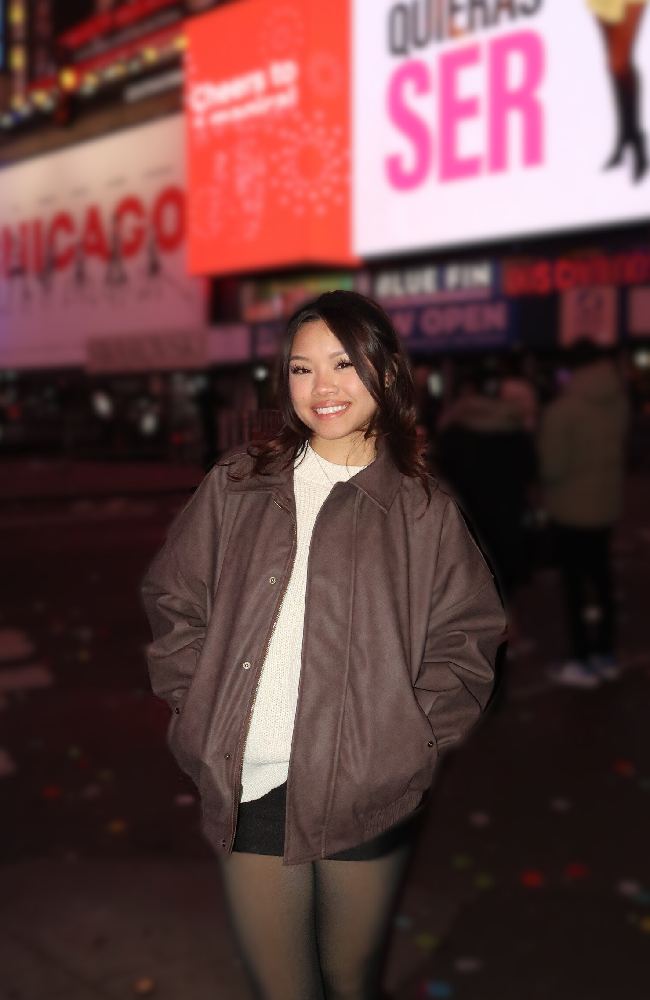

Welcome to Cougar Crave Café, a culinary gem at the University of Houston - Sugar Land,
founded by Kym, a UH alumna and culinary virtuoso with 15 years of experience.
Kym grew up in a household where the kitchen was the center of life. This early immersion and appreciation sparked Kym's passion
for the culinary arts.
Drawing on rich family traditions, and extensive work experience, Kym finally opened her first restaurant in 2013: "The Urban Kitchen".
Through years of restaurant experience and a love for UH, came about her latest project - "Cougar Crave Café"!
Aside from managing her restaurants, Kym also finds passions within playing sports, going to the park, and spending time with her friends and family.
Her commitment to high quality foods and experiences ensures that everyone will leave her restaurants satisfied and eager to return!
